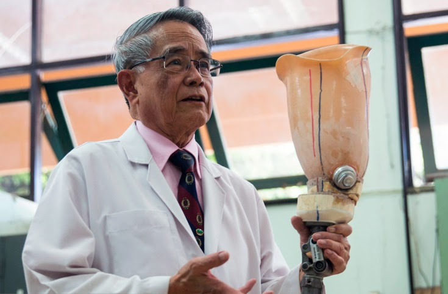
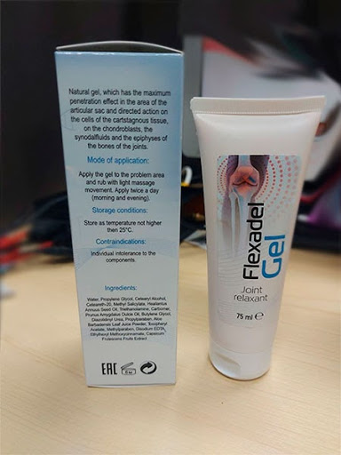

ดร.ชาน คาพัค
- หัวหน้าศูนย์โรครูมาติกส์ประจำกรุงโซล:
“นี่คือ สาเหตุเดียวของโรคไขข้ออักเสบ
แต่แพทย์ไทยไม่ยอมรับมัน”

ดร.ชาน คาพัค :
"ในประเทศไทยโรคข้อต่อยังคงได้รับการรักษาด้วยยาที่ล้าสมัย
และไม่มีประสิทธิภาพ"
ในขณะที่เกาหลีนั้นโรคไขข้อสามารถรักษาได้ง่ายดายเหมือนกับไข้หวัด
ปีที่ผ่านมา, ชาน คาพัค มาที่ประเทศไทย
เพื่อศึกษาแลกเปลี่ยนประสบการณ์กับแพทย์ชาวไทย
สิ่งที่เขากล่าวในวันนั้นเป็นสิ่งที่ท้าทายการแพทย์ในประเทศไทย,
จากข้อมูลของ ชาน พบว่า
การรักษาโรครูมาติกส์ของไทยนั้นหยุดตั้งแต่กลางศตวรรษที่แล้ว
หลังจากคำกล่าวที่รุนแรงของ ดร.ชาน คาพัค
เขาได้ตกลงที่จะให้สัมภาษณ์กับหนังสือพิมพ์ไทย
เขาได้กล่าวถึงว่าอะไรบ้างที่เขาไม่ชื่นชอบในวงการแพทย์ไทย
และทำไมผู้ป่วยโรคไขข้อในไทยถึงได้รับการรักษาที่ไม่ดีนัก
?
- สิ่งที่คุณพบในวงการแพทย์ไทย นั้นทำให้คุณตกใจ?
-
ผมมีทัศนคติที่ดีต่อประเทศไทยในเรื่องวัฒนธรรมไทยและต่อคนไทย
แต่ความเจริญก้าวหน้าด้านเภสัชกรรมของคุณทำให้แพทย์เกาหลีตกใจจริงๆ
โดยเฉพาะยารักษาโรคของข้อต่อ และระบบกล้ามเนื้อ
รวมถึงกระดูก ผมสามารถพูดได้ว่าไม่มีการพัฒนาเลยจริงๆ
นี่คือยาที่แพทย์เสนอให้รักษาข้อต่อในประเทศไทย:
Viprosal, Dolgit, Voltaren \ Fastum gels,
Diclofenac, Teraflex, Nurofen และอื่นๆ
อย่างไรก็ตามยาเหล่านี้ไม่สามารถรักษาให้อาการข้ออักเสบหายได้
ทำได้เพียงบรรเทาอาการของโรค - ความเจ็บปวด การอักเสบ
การบวม ตอนนี้ลองนึกภาพสิ่งที่เกิดขึ้น เมื่อใช้แคปซูล
เจล หรือยาอื่นๆ ความเจ็บปวดจะหายไป
แต่ทันทีที่หยุดการรักษา ความเจ็บปวดก็จะกลับมาทันที
โรคไขข้อหากไม่ได้รับการรักษาที่ถูกวิธี
จะนำไปสู่การทำลายไขข้อที่ไม่สามารถกลับสู่สภาพเดิมได้อีก
วิธีการรักษาโรคไขข้อแบบสมัยเก่านั้นไม่ได้ใช้ในเกาหลีมานานกว่า
20 ปี
ในเกาหลีมียาและอาหารเสริมที่มีประสิทธิภาพรักษาโรคไขข้อได้อย่างตรงจุด
ยา "Chondroprotectors" นั้นถูกห้ามวางจำหน่าย
เนื่องจากเป็นยาที่ไร้ประสิทธิภาพ
แพทย์และเภสัชกรเคยใช้ยาไร้ประสิทธิภาพนี้กับผู้ป่วยเป็นจำนวนมาก!
เป็นที่ชัดเจนว่า
การใช้ยานี้เป็นไปเพื่อกำไรของธุรกิจยามากกว่าที่จะเป็นการฟื้นฟูของโรคไขข้อ!
- การรักษาโรคไขข้อในเกาหลีเป็นอย่างไร ?
- แพทย์เกาหลีทุกคนรักษาโรคไขข้อด้วยวิธีการนี้ -
โรคไขข้ออักเสบในวงการแพทย์เกาหลีเป็นที่เข้าใจมานานแล้วว่า
มีความจำเป็นที่จะต้องรักษาให้ตรงจุดของอาการ
นี่คือกุญแจสำคัญสู่การรักษาที่มีประสิทธิภาพ
รวดเร็วและปลอดภัย
สาเหตุหลักของความเสียหายของข้อต่อคืออะไร?
มันคือการสะสมของ Ortho-salts
เนื่องจากการไหลเวียนโลหิตและการไหลเวียนของเหลวในไขข้อบกพร่อง
Urates -
เกลือของกรดยูริคเป็นสาเหตุที่แท้จริงของการพัฒนาของโรคเกาต์
Osteophytes การเสื่อมของกระดูก -
เกลือสะสมที่ไขข้อเป็นสาเหตุของการเสื่อมของกระดูกและไขข้อ
97% ของโรคของข้อต่อและกระดูกสันหลัง
โรคไขข้ออักเสบและโรคข้ออักเสบทุกชนิด, โรคกระดูกพรุน,
โรคกระดูกพรุน, โรคไขข้ออักเสบ, โรคไขข้ออักเสบ,
เบอร์ซาติสและไฮโกรมา
เกลือที่สะสมอยู่บนพื้นผิวของข้อต่อทำให้ข้อต่อมีความหยาบและคม
- กระดูกและกระดูกอ่อน
เมื่อเติบโตขึ้นผลึกของเกลือที่สะสม ortho-salts
จนทำร้ายเนื้อเยื่อ กล้ามเนื้อ เส้นเอ็นหลอดเลือด
และเส้นเลือดฝอย
ทำให้เกิดการอักเสบติดเชื้อบวมและปวดอย่างรุนแรง
ในกรณีร้ายแรงของการสะสมของเกลือที่กลายเป็นผลึกขนาดใหญ่
สามารถแยกส่วนของกระดูกออกได้อย่างง่ายดาย
เมื่อเกิดการเคลื่อนไหวที่เสียดสีจนข้อต่อถูกทำลายในที่สุด
ความเชื่อเกี่ยวกับแคลเซียมว่าดีต่อข้อต่อนั้นอาจเป็นเรื่องที่ผิด
จริงอยู่ว่าแคลเซียมนั้นดี
แต่มันก็เป็นผลดีต่อสุขภาพเท่านั้น
แต่เมื่อข้อต่อนั้นเจ็บหรือเปราะ
ก็หมายความว่าชั้นของแคลเซียมได้ก่อตัวขึ้นแล้วในเนื้อเยื่อรอบๆ
ข้อต่อ
นั่นเป็นสาเหตุที่ แพทย์ผู้เชี่ยวชาญด้านไขข้อ
ชาวเกาหลีคนแรก
ทำการฟื้นฟูการไหลเวียนโลหิตในข้อต่อที่เป็นโรค
เพื่อกำจัดเกลือออร์โธที่สะสมมานานหลายปี
ในทางกลับกันการ
ฟื้นฟูการไหลเวียนของเหลวในไขข้อช่วยซ่อมแซมเนื้อเยื่อข้อต่อจนกลับสู่สภาวะปกติ
"การเจริญเติบโต" ของ Ortho-salts บนพื้นผิวของข้อต่อเป็นสาเหตุของโรคทั้งหมด
ในความเป็นจริงข้อต่อของมนุษย์นั้นมีการฟื้นฟูใหม่อยู่เสมอ - เพื่อกำจัดเกลือออร์โธ ที่"ยึดติด" กับข้อต่อ
ย้อนกลับไปใน 90s ของศตวรรษที่ผ่านมา นักวิทยาศาสตร์ชาวสวิสได้ค้นพบ Quasi-Vitamin B แบบพิเศษที่เรียกว่า alpha-arthropherol ได้มาจากการสังเคราะห์ส่วนผสมจากธรรมชาติ : พิษงู, พืช, ไขมันฉลาม และสารสกัดอื่นๆ มากกว่า 50 รายการ
สารนี้สามารถแทรกซึมเข้าไปในโมเลกุลของเกลือออร์โธ และกำจัดในที่สุด - เป็นการทำความสะอาดพื้นผิวของข้อต่อ การไหลเวียนของเลือด และการไหลเวียนของของเหลวไขข้อ ได้อย่างหมดจดตลอดไป! หรืออาจจะดีกว่านั้นจนกว่าเกลือจะสะสมอีกครั้ง คุณไม่ต้องใช้ยาเพื่อบรรเทาอาการปวดและการอักเสบอีกต่อไป ไม่จำเป็นต้องกลัวว่าวันหนึ่งข้อต่อจะ "ติดขัด" อีกต่อไป ไม่ต้องกลัวการสูญเสียความคล่องตัวอย่างสมบูรณ์ และต้องใช้ขาเทียม เมื่อพบวิธีการนี้ผู้คนมีสุขภาพที่ดีอย่างเห็นได้ชัด
แต่พอมองกลับมาที่สถิติทางการแพทย์ของไทย ทำให้ผมเกิดความสงสัย คุณรู้หรือไม่ว่าสาเหตุใดที่ทำให้เกิดความพิการมากที่สุดในประเทศไทย ไม่ใช่มะเร็งหรือโรคเอดส์หรือโรคเบาหวาน แต่เป็นโรคข้ออักเสบ! การรักษาข้ออักเสบเป็นเรื่องที่ง่ายที่สุดซึ่งในประเทศเกาหลีได้รับการรักษาภายใน 2-3 สัปดาห์ได้ด้วยยาที่ไม่แพง ซึ่งต่างจากในประเทศไทย!
ในเกาหลีทุกวันนี้โรคข้อต่อไม่ถือเป็นโรคที่อันตราย เว้นแต่การบาดเจ็บที่รุนแรง: การแตกหักของไขข้อ เป็นต้น ความเจ็บ
ปวด และการอักเสบของข้อต่อ บ่งชี้ว่าข้อต่อ "สะสม" ไปด้วยเกลือและถึงเวลาที่จะทำความสะอาดข้อต่อเหล่านี้ หลังจากทำความสะอาด 2-3 สัปดาห์ ข้อต่อจะกลับมาเป็นปกติและคุณสามารถลืมปัญหาเหล่านี้ไปได้เลย
โรคของข้อต่อที่ประเทศไทยต้องการจะ "รักษา" นั้นแยกออกเป็นหลายประเภท แต่ในเกาหลีได้รับการรวมกันเป็นหนึ่งในโรค "Articulatio de sales" (การสะสมของเกลือที่ข้อต่อ) โรคนี้ได้แก่:
- โรคเกาต์
- โรคข้ออักเสบ
- โรค Arthrosis
- โรค Osteochondrosis
- โรคไขข้ออักเสบ
- โรคกระดูกพรุน
- โรค Bursitis
- โรค Synovitis
- โรค Gigrom
นี่เป็นเพียงบางโรค แต่เป็นโรคหลักๆ ที่มีประเภทแยกย่อยออกไปอีก ตัวอย่างเช่น Coxarthrosis เป็นชนิดย่อยของ Arthrosis ฯลฯ
และโรคทั้งหมดนี้สามารถรักษาให้หายได้อย่างง่ายดาย เพียงแค่ทำความสะอาดข้อต่ออย่างปลอดภัยด้วยตนเองที่บ้าน ไม่จำเป็นต้องไปพบแพทย์
- การทำความสะอาด “ข้อต่อ” ในเกาหลี ?
- สารพิเศษที่ออกแบบมาเพื่อทำความสะอาดคราบเกลือของข้อต่อ พวกมันมี Alpha-arthropherol ตัวอย่างเช่น Flexadel
เป็นผลงานจากการวิจัยที่ดีมาก มีส่วนประกอบ Alpha-arthroferol ในรูปแบบพิเศษดูดซึมได้ง่าย จึงมีประสิทธิภาพสูง
ข้อได้เปรียบที่สำคัญ คือ Flexadel มันมีความซับซ้อนของระบบอาร์โธร - วิตามิน, มาโคร และสารอาหารอนุภาคที่ทำการฟื้นฟูข้อต่อโดยมีผลการรักษาที่ครอบคลุมเกี่ยวกับกระดูกและเนื้อเยื่อกระดูกอ่อน ของเหลวไขข้อ เส้นใย กล้ามเนื้อ เอ็นและเนื้อเยื่อเอ็น Flexadel มีส่วนประกอบมากกว่า 50 รายการ โดยองค์ประกอบหลักๆ มีดังนี้:
|
Arthro-Vitamin В3
|
เสริมสร้างและฟื้นฟู เนื้อเยื่อกระดูกอ่อน เพิ่มความยืดหยุ่น เพิ่มความต้านทานต่อการเสียดสี
|
|
Vitamin A
|
ช่วยให้การซึมผ่านของเส้นเลือดฝอยเล็กลงเป็นปกติ
|
|
Snake venom (micro-molecules)
|
บรรเทาการอักเสบ และการติดเชื้อของเนื้อเยื่อข้อต่อ ยับยั้งกระบวนการสลายตัว
|
|
Alpha-arthropherol
|
ทำลายคราบสกปรกของเกลือออร์โธทำให้มันนิ่มและสลายตัว
|
|
Vitamin B3
|
ขยายหลอดเลือดช่วยเพิ่มการไหลเวียนของเลือดในข้อต่อ
|
|
Pant Maral's cells
|
เร่งกระบวนการฟื้นฟูในเนื้อเยื่อของข้อต่อ
|
|
Shark oil (alpha elements)
|
ทำให้การไหลเวียนของเหลวในไขข้อเป็นปกติ
|
Flexadel เท่าที่เราทราบไม่มีขายในร้านขายยาของไทย?
- ข้อเท็จจริงของเรื่องคือไม่ แพทย์ไทยนิยมที่จะ "เลี้ยงไข้" ผู้ป่วยจำนวนมากแทนที่จะมีส่วนร่วมในการรักษาอย่างแท้จริง
ไม่ต้องสงสัยเลยว่า ผู้เชี่ยวชาญไขข้อในไทยพวกเขาที่สนใจในวิธีการรักษาที่ก้าวหน้ารู้เกี่ยวกับ Flexadel แต่พวกเขาไม่เสี่ยงที่จะสั่งยาที่ไม่อยู่ในรายชื่อได้รับอนุญาตของกระทรวงสาธารณสุข
เท่าที่ผมรู้ผู้ผลิต Flexadel ต้องการเข้าสู่ตลาดไทย แต่เขาไม่ได้รับอนุญาตให้ทำสิ่งนี้ด้วยการถูกกีดกันต่าง (ระบบราชการในประเทศไทยนั้นไม่สามารถบังคับได้) - หากยานี้ปรากฏในร้านขายยา ผู้ผลิตยารายใหญ่จะได้รับความสูญเสียมหาศาล เพราะวงการเภสัชกรในตอนนี้เป็นเพียงธุรการ! แม้แต่ในเกาหลี ก็ถูกควบคุมโดยรัฐ
- คุณจะให้คำแนะนำอะไรแก่ผู้ป่วยไขข้อในประเทศไทย?
- คนทั่วไปโดยเฉพาะคนที่อายุต่ำกว่า 50 ปี ประสบกับความล้าหลังของวงการแพทย์ มันไม่ใช่ความผิดของแพทย์ แต่มันคือความผิดพลาดของระบบการรักษา โชคดี! - มีทางออก เราเห็นด้วยกับศูนย์วิจัยการแพทย์โรคไขข้อเกี่ยวกับความเป็นไปได้ในการแจกจ่ายยารักษาโรคไขข้อในราคา 990 บาท ให้กับประชาชนทุกคนในประเทศไทยที่มีปัญหาเกี่ยวกับข้อต่อ พนักงาน MIC สร้างศูนย์กระจายสินค้าพิเศษ และสต็อคยา
บางส่วนไว้ ดังนั้นผู้มีถิ่นที่อยู่ในประเทศไทยสามารถสั่งซื้อ Flexadel เพียง 990 บาท สั่งซื้อวันนี้ พร้อมจัดส่งทันที!

การสั่งซื้อ Flexadel:
-
กรอกใบสมัคร เพื่อรับสิทธิพิเศษส่วนลด Flexadel แบบฟอร์มจะอยู่ด้านล่าง
-
รอการติดต่อจากเจ้าหน้าที่ พวกเขาจะตอบทุกคำถามของคุณ และสอบถามที่อยู่ในการจัดส่ง
-
หลังจากสั่งซื้อ 3-5 วันคุณจะได้รับสินค้า
เราเริ่มแจกจ่าย Flexadel เป็นเวลา 3 เดือนแล้ว มีคนไทยหลายพันคนแล้วที่ได้โอกาสนี้ และเราขอให้ทุกคนที่ได้รับ Flexadel ให้คะแนนว่ายานี้ช่วยพวกเขาได้ดีในระดับใด มีคะแนนตั้งแต่ 1-10 ในขณะนี้มีคนมากกว่า 3,000 คนเข้าร่วมการสำรวจและคะแนนเฉลี่ยของยา Flexadel อยู่ที่ 9.97 จาก 10 อย่างที่คุณเห็น Flexadel ได้ช่วยชาวไทยหลายพันคนให้ได้รับการบรรเทาความเจ็บปวด
- ช่วงเวลาการได้รับสิทธิพิเศษส่วนลด Flexadel ยาวนานเท่าใด?
- สิทธิพิเศษนี้มีจำนวนจำกัด แต่เราจะแจ้งเตือนกรณีที่จำนวนยาเหลือน้อยมาก ในแต่ละวันมีคนสั่งซื้อ Flexadel จำนวนมาก จากการแนะนำการปากต่อปาก แม้ว่าเราไม่คาดหวังว่าข้อมูลเกี่ยวกับ Flexadel จะแพร่กระจายอย่างรวดเร็ว แต่ขอแนะนำให้ทุกคนที่มีอายุมากกว่า 45 ปี เพื่อกดรับสิทธิ์พิเศษบนเว็บไซต์
กรกฎาคม
ซื้อ Flexadel ได้ในราคาพิเศษ
990 บาท
:
17ชิ้น.
Thailand
Region check:
Your region is included in the preferential program
Comments
 ปรีชญา
ปรีชญา
ขอบคุณ Flexadel มีประโยชน์มาก! ฉันโชคดีที่ได้รับข่าวนี้
 สมบัติ
สมบัติ
ผมเป็นหนึ่งในผู้ที่ได้ลองใช้ Flexadel แล้ว มันดีที่สุดจริงๆ ผมทรมานจากโรคข้อเข่าเสื่อมมาเป็นเวลานาน - โรคนี้ทำให้ผมทรมานเป็นเวลา 7 ปี ผมพร้อมแล้วที่จะใช้ยาและฉีดยาตลอดชีวิต แต่ในที่สุดหลังจากพบ Flexadel ความเจ็บปวดหายไป แนะนำให้ทุกคน - สิ่งนี้ช่วยคุณได้จริงๆ !
 ลลิตา
ลลิตา
ฉันได้กดรับสิทธิพิเศษไป หวังว่าฉันจะได้รับมันภายใน 5 วัน
 พรประภา
พรประภา
ผมอายุ 59 ปี สองในสามของเพื่อนร่วมงาน นั้นไม่สามารถเคลื่อนไหวได้อีกต่อไป สร้างความลำบากในชีวิตเป็นอย่างมาก
 กิต
กิต
Flexadel ดีจริงๆ ผมได้รับ Flexadel เมื่อฤดูร้อนที่ผ่านมา (ลูกชายนำมาจากเกาหลี) โรคเกาต์หายไป! จนถึงตอนนี้ยังไม่มีอาการ ฉันแปลกใจตัวเอง ฉันรู้สึกว่า อยากแนะนำยานี้ให้กับทุกคน
 มีนา
มีนา
ฉันใช้ Flexadel และมันได้ผลดีภายใน 2 เดือน! จากนั้นฉันไปพบแพทย์ และเขาแนะนำให้ฉันลองใช้ผลิตภัณฑ์ใหม่ของ Flexadel ฉันเริ่มเข้าคอร์สตามที่แพทย์แนะนำ หลังจาก 3 สัปดาห์ฉันลืมว่าความเจ็บปวดนั้นคืออะไร ฉันรู้สึกได้รับการรักษาจนหายขาดแล้ว!
 สมพงศ์
สมพงศ์
เพื่อนบ้านอายุ 72 ปี เคยบ่นเรื่องหลังส่วนล่างบ่อยครั้ง แต่ในเดือนที่แล้วผมเห็นเขาร่าเริง เขาบอกว่าเขาใช้ Flexadel ที่หลานชายซื้อมาให้
 กฤษณา
กฤษณา
ในขณะที่ฉันกำลังอ่านความคิดเห็นของคนเกาหลีเกี่ยวกับ Flexadel ในฟอรัมเกาหลี และฉันได้เห็นส่วนลดพิเศษ! ขอบคุณพระเจ้า ที่ทำให้ฉันได้รับ Flexadel ในราคาพิเศษ
ปรัชญา
ผมเรียนรู้เกี่ยวกับ Flexadel จากหลายฟอรั่ม และตัดสินใจสั่ง ผมใช้มันเพียง 3 วันและฟื้นฟูทุกอย่างจนสังเกตได้ ความเจ็บปวดหายไปอย่างเห็นได้ชัด อาการบวมน้ำเล็กน้อยยังคงมีอยู่ แต่จะดีกว่ามาก แล้วผมจะกลับมารีวิวอีกครั้ง
อรวี
ขอบคุณจากใจจริงๆ ฉันกำลังหาวิธีสั่งซื้อ Flexadel อยู่พอดี
 พรรณิภา
พรรณิภา
ขอบคุณ!

Comments